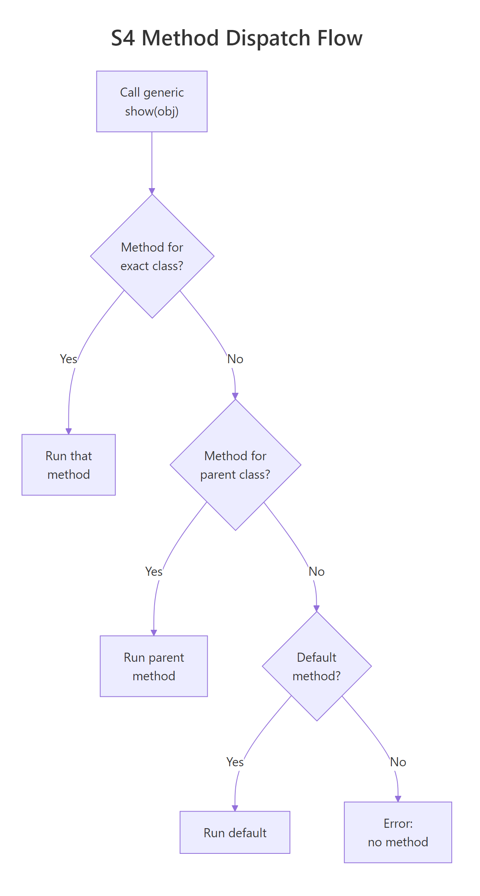
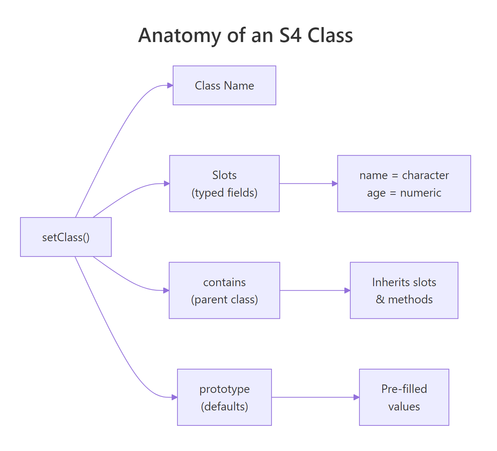
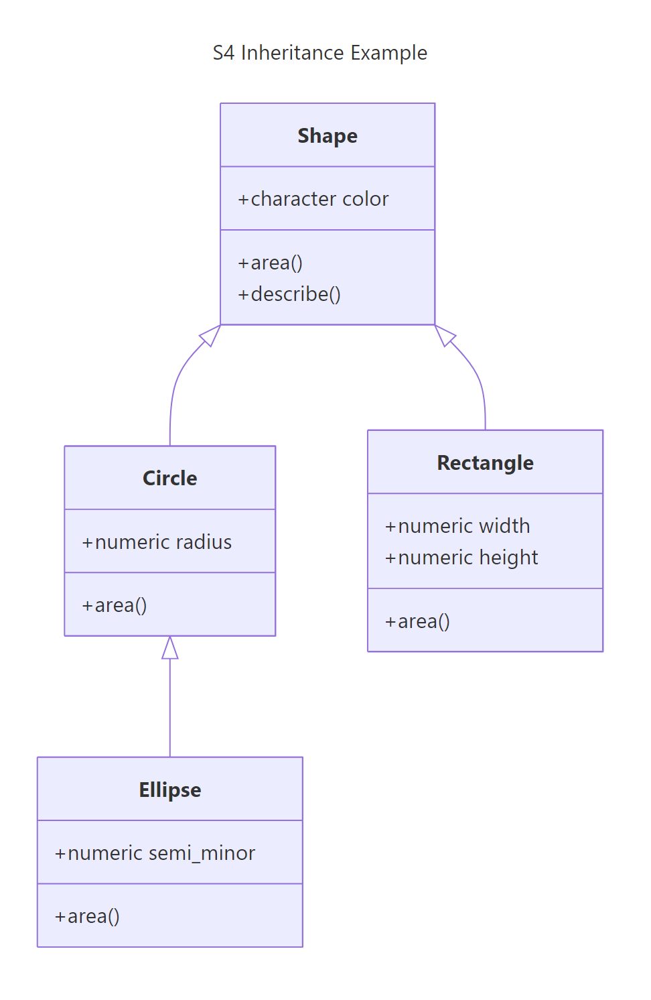

S4 Classes in R: Formal Object-Oriented Programming With Type Checking
S4 classes are R's formal object-oriented system — they enforce typed fields (called slots), validate data on creation, and support multiple dispatch so a single generic function can choose different behavior based on the types of several arguments at once. If S3 is a handshake agreement, S4 is a signed contract.
What Are S4 Classes and Why Use Them Instead of S3?
S3 classes are simple — you slap a class label onto a list and trust everyone to play nice. That flexibility is great until someone passes a character where you expected a number, and nothing breaks until three functions later. S4 solves this with formal class definitions that enforce types at creation time.
Let's define a Person class with S4 and see what happens when we pass the wrong types.
# Define an S4 class with typed slots
setClass("Person",
slots = c(
name = "character",
age = "numeric"
)
)
# Create a valid Person
alice <- new("Person", name = "Alice", age = 30)
alice
#> An object of class "Person"
#> Slot "name":
#> [1] "Alice"
#>
#> Slot "age":
#> [1] 30
# Try passing a string where a number is expected
tryCatch(
new("Person", name = "Bob", age = "thirty"),
error = function(e) message(e$message)
)
#> invalid class "Person" object: invalid object for slot "age" in class "Person": got class "character", should be or extend class "numeric"
S4 caught the type mismatch immediately — before the object even existed. Now compare that to S3, which accepts anything without complaint.
# S3 version — no type checking at all
person_s3 <- list(name = "Bob", age = "thirty")
class(person_s3) <- "Person_S3"
person_s3$age
#> [1] "thirty"
# No error. The bug hides until something tries to do math on age.
The S3 version happily stores "thirty" as the age. You won't discover the problem until some downstream function tries person_s3$age + 1 and throws a confusing error about non-numeric arguments.
Key Insight
S4 catches type errors at object creation, not three functions later. When you define slots with types, R validates every field the moment you call new(). This front-loads the pain — errors are immediate, specific, and easy to fix.
Here's when S4 makes sense over S3:
Shared packages — other people will create objects from your classes, and you can't trust them to pass correct types
Bioconductor ecosystem — S4 is the standard; genomic data structures like SummarizedExperiment and GRanges are all S4
Complex hierarchies — when you need inheritance, multiple dispatch, or cross-field validation
Safety-critical code — when a wrong type could produce silently wrong results
Try it: Define an S4 class ex_Book with slots title (character) and pages (numeric). Create a valid book, then try creating one with pages as a string to see the error.
# Try it: define ex_Book class
setClass("ex_Book",
slots = c(
title = "character",
pages = "numeric"
)
)
# Create a valid book:
# your code here
# Try an invalid book (pages as string):
# your code here
Click to reveal solution
# Valid book
my_book <- new("ex_Book", title = "R Programming", pages = 350)
my_book
#> An object of class "ex_Book"
#> Slot "title":
#> [1] "R Programming"
#>
#> Slot "pages":
#> [1] 350
# Invalid book — this errors
tryCatch(
new("ex_Book", title = "Bad Book", pages = "many"),
error = function(e) message(e$message)
)
#> invalid class "ex_Book" object: invalid object for slot "pages" in class "ex_Book": got class "character", should be or extend class "numeric"
Explanation: S4 checks each slot's type during new() and rejects mismatches immediately.
How Do You Define an S4 Class With setClass()?
The setClass() function takes four key arguments. Think of it as filling out a form for your class:
Class — the name (a string, typically UpperCamelCase)
slots — a named character vector mapping field names to their required types
contains — the parent class to inherit from (optional)
prototype — default values for slots (optional but recommended)
Let's define an Employee class that builds on these concepts.
# Define Employee with all setClass() arguments
setClass("Employee",
slots = c(
name = "character",
salary = "numeric",
department = "character",
active = "logical"
),
prototype = list(
name = "Unknown",
salary = 0,
department = "Unassigned",
active = TRUE
)
)
# With a prototype, new() works even with no arguments
empty_emp <- new("Employee")
empty_emp@name
#> [1] "Unknown"
empty_emp@active
#> [1] TRUE
# Override specific defaults
emp1 <- new("Employee", name = "Selva", salary = 85000, department = "Data Science")
emp1@department
#> [1] "Data Science"
The prototype gives every slot a sensible default. This is particularly useful during development — you can create test objects without specifying every field.
Slot types can be any R class, including other S4 classes or the special type "ANY" that accepts anything.
# ANY slot accepts any type
setClass("FlexObj",
slots = c(
label = "character",
data = "ANY"
)
)
new("FlexObj", label = "numbers", data = 1:10)@data
#> [1] 1 2 3 4 5 6 7 8 9 10
new("FlexObj", label = "text", data = "hello")@data
#> [1] "hello"
Tip
Always provide a prototype so new() works without arguments during testing. It also serves as documentation — readers see at a glance what a "blank" object looks like. If a slot has no sensible default, use NA or NA_character_ / NA_real_ to signal "not yet set."
Try it: Define an S4 class ex_Car with slots make (character), year (numeric), and electric (logical). Give it a prototype where electric defaults to FALSE. Create a Tesla Model 3 from 2024.
# Try it: define ex_Car class
setClass("ex_Car",
slots = c(
make = "character",
year = "numeric",
electric = "logical"
),
prototype = list(
# your defaults here
)
)
# Create: Tesla Model 3, 2024, electric = TRUE
# your code here
Click to reveal solution
setClass("ex_Car",
slots = c(
make = "character",
year = "numeric",
electric = "logical"
),
prototype = list(
make = "Unknown",
year = NA_real_,
electric = FALSE
)
)
ex_tesla <- new("ex_Car", make = "Tesla Model 3", year = 2024, electric = TRUE)
ex_tesla
#> An object of class "ex_Car"
#> Slot "make":
#> [1] "Tesla Model 3"
#>
#> Slot "year":
#> [1] 2024
#>
#> Slot "electric":
#> [1] TRUE
Explanation: The prototype sets electric = FALSE as the default, but we override it to TRUE for the Tesla.
How Do You Create and Inspect S4 Objects?
You already know new() creates objects. But in practice, you should wrap it in a helper constructor function — a friendly, user-facing function that validates inputs before passing them to new(). This is the pattern used throughout Bioconductor and other professional S4 packages.
Let's first look at the inspection tools available.
# Create an Employee
emp1 <- new("Employee", name = "Selva", salary = 85000, department = "Data Science")
# Check class membership
is(emp1, "Employee")
#> [1] TRUE
# List all slots
slotNames(emp1)
#> [1] "name" "salary" "department" "active"
# Get the class definition
getSlots("Employee")
#> name salary department active
#> "character" "numeric" "character" "logical"
# Check if a class exists
isClass("Employee")
#> [1] TRUE
These functions help you explore S4 objects interactively — especially useful when working with someone else's S4 code (like Bioconductor packages) and you need to understand the structure.
Now here's the helper constructor pattern. Instead of exposing new() directly, write a function with a clear name and argument validation.
# Helper constructor — the recommended pattern
make_employee <- function(name, salary, department = "General") {
if (!is.character(name) || nchar(name) == 0) {
stop("'name' must be a non-empty string")
}
if (!is.numeric(salary) || salary < 0) {
stop("'salary' must be a non-negative number")
}
new("Employee", name = name, salary = salary, department = department)
}
# Clean, readable creation
emp2 <- make_employee("Priya", 92000, "Engineering")
emp2@name
#> [1] "Priya"
# Catches bad input with a clear message
tryCatch(
make_employee("", -5000),
error = function(e) message(e$message)
)
#> 'name' must be a non-empty string
The helper function gives you two layers of protection: your own argument checks (clear, human-readable messages) plus S4's built-in type checking (catches anything your checks missed).
Warning
Never expose new() directly in user-facing code. Write a helper constructor with a clear name like make_employee() or Employee(). This is the Bioconductor convention — it lets you validate inputs, set computed defaults, and change the internal implementation without breaking user code.
Try it: Write a helper function ex_make_employee(name, salary) that creates an Employee but rejects negative salaries with a clear error message before calling new().
# Try it: write the helper constructor
ex_make_employee <- function(name, salary) {
# your validation here
# your new() call here
}
# Test:
ex_make_employee("Test", 50000)@name
#> Expected: "Test"
Click to reveal solution
ex_make_employee <- function(name, salary) {
if (salary < 0) stop("Salary cannot be negative")
new("Employee", name = name, salary = salary)
}
ex_make_employee("Test", 50000)@name
#> [1] "Test"
tryCatch(
ex_make_employee("Bad", -1000),
error = function(e) message(e$message)
)
#> Salary cannot be negative
Explanation: The helper catches domain-specific errors (negative salary) before S4 ever sees the data.
How Do You Access and Modify Slots?
S4 slots are accessed with the @ operator (not $). You can also use the slot() function for programmatic access when the slot name is stored in a variable.
# Direct access with @
emp1@name
#> [1] "Selva"
emp1@salary
#> [1] 85000
# Programmatic access with slot()
field_name <- "department"
slot(emp1, field_name)
#> [1] "Data Science"
# Modify with @<-
emp1@salary <- 90000
emp1@salary
#> [1] 90000
# Type checking still works on modification
tryCatch(
emp1@salary <- "a lot",
error = function(e) message(e$message)
)
#> invalid class "Employee" object: invalid object for slot "salary" in class "Employee": got class "character", should be or extend class "numeric"
Direct @ access works, but there's a serious catch: it bypasses your validity function (which we'll add in the next section). The professional approach is to define accessor functions — getter/setter pairs that control how users interact with your slots.
# Define getter generic and method
setGeneric("get_salary", function(x) standardGeneric("get_salary"))
setMethod("get_salary", "Employee", function(x) x@salary)
# Define setter generic and method
setGeneric("set_salary<-", function(x, value) standardGeneric("set_salary<-"))
setMethod("set_salary<-", "Employee", function(x, value) {
x@salary <- value
validObject(x)
x
})
# Use the accessors
get_salary(emp1)
#> [1] 90000
set_salary(emp1) <- 95000
get_salary(emp1)
#> [1] 95000
The setter calls validObject(x) after the modification — this triggers any validity checks you've defined. Without this, someone could set a negative salary and your validity function would never know.
Warning
Direct @ modification bypasses validity checks. If you define a validity function requiring salary > 0, someone can still do obj@salary <- -1 without error. Accessor functions with validObject() inside them are the only way to enforce constraints on modification.
Try it: Write a getter generic ex_get_salary and a method for Employee that returns the salary slot.
# Try it: define a getter
setGeneric("ex_get_salary", function(x) standardGeneric("ex_get_salary"))
# Write the method:
# your code here
# Test:
ex_get_salary(emp1)
#> Expected: 95000
Explanation: The generic declares the interface, the method provides the implementation for Employee objects.
How Do You Enforce Data Integrity With Validity Checking?
Slot types catch wrong types (character instead of numeric), but they can't catch wrong values — a salary of -50000 is still numeric. For that, you need setValidity().
A validity function receives the object and returns TRUE if everything is fine, or a character vector of error messages if something is wrong.
# Add validity checking to Employee
setValidity("Employee", function(object) {
errors <- character()
if (object@salary < 0) {
errors <- c(errors, "salary must be non-negative")
}
if (nchar(object@name) == 0) {
errors <- c(errors, "name must be non-empty")
}
if (!object@department %in% c("General", "Data Science", "Engineering",
"Marketing", "Unassigned")) {
errors <- c(errors, "department must be a recognized department")
}
if (length(errors) == 0) TRUE else errors
})
# This works — all checks pass
valid_emp <- new("Employee", name = "Raj", salary = 70000, department = "Engineering")
valid_emp@name
#> [1] "Raj"
# This fails — negative salary
tryCatch(
new("Employee", name = "Bad", salary = -5000, department = "General"),
error = function(e) message(e$message)
)
#> invalid class "Employee" object: salary must be non-negative
The validity function runs automatically when new() creates the object. But here's the critical gotcha — it does not run when you modify a slot with @:
# @ bypasses validity — this silently succeeds!
emp3 <- new("Employee", name = "Test", salary = 50000, department = "General")
emp3@salary <- -9999
emp3@salary
#> [1] -9999
# The object is now invalid, but R doesn't know
# You must call validObject() explicitly to catch it
tryCatch(
validObject(emp3),
error = function(e) message(e$message)
)
#> invalid class "Employee" object: salary must be non-negative
# Fix it back
emp3@salary <- 50000
This is why accessor functions matter. The set_salary<- method we defined earlier calls validObject() after every change, closing this gap.
Key Insight
Validity functions run automatically on new() and on explicit validObject() calls, but NOT on direct slot assignment with @. This is the #1 S4 gotcha. Always provide setter functions that call validObject() so users can't accidentally create invalid objects.
Try it: Add a validity check to ex_Book that ensures pages > 0 and title is non-empty. Then try creating a book with 0 pages.
# Try it: add validity to ex_Book
setValidity("ex_Book", function(object) {
errors <- character()
# your checks here
if (length(errors) == 0) TRUE else errors
})
# Test with invalid data:
tryCatch(
new("ex_Book", title = "", pages = 0),
error = function(e) message(e$message)
)
#> Expected: error about pages and title
Click to reveal solution
setValidity("ex_Book", function(object) {
errors <- character()
if (object@pages <= 0) {
errors <- c(errors, "pages must be greater than 0")
}
if (nchar(object@title) == 0) {
errors <- c(errors, "title must be non-empty")
}
if (length(errors) == 0) TRUE else errors
})
tryCatch(
new("ex_Book", title = "", pages = 0),
error = function(e) message(e$message)
)
#> invalid class "ex_Book" object: pages must be greater than 0, title must be non-empty
Explanation: The validity function collects all errors (not just the first), so the user sees every problem at once.
How Do You Define S4 Generics and Methods?
A generic function is a dispatcher — it looks at the class of its arguments and routes the call to the right method. You create them with setGeneric() and bind implementations with setMethod().
Think of it like a restaurant hostess. When a party walks in, the hostess (generic) looks at the reservation type (class) and seats them at the right table (method). The hostess doesn't cook — she just routes.
# Step 1: Create the generic
setGeneric("describe", function(object) {
standardGeneric("describe")
})
# Step 2: Define method for Person
setMethod("describe", "Person", function(object) {
paste(object@name, "is", object@age, "years old")
})
# Step 3: Define method for Employee
setMethod("describe", "Employee", function(object) {
paste(object@name, "works in", object@department,
"earning", object@salary)
})
# Dispatch in action — same function, different behavior
describe(alice)
#> [1] "Alice is 30 years old"
describe(emp1)
#> [1] "Selva works in Data Science earning 95000"
The standardGeneric("describe") inside setGeneric() is a placeholder — it tells R "this function dispatches to methods, don't try to run it directly."
To customize how objects print, override the existing show() generic. Since show already exists in R, you only need setMethod() — no setGeneric() required.
# Override show() for prettier printing
setMethod("show", "Employee", function(object) {
status <- if (object@active) "Active" else "Inactive"
cat(sprintf("Employee: %s | %s | $%s | %s\n",
object@name, object@department,
format(object@salary, big.mark = ","), status))
})
# Now printing is clean
emp1
#> Employee: Selva | Data Science | $95,000 | Active
# Inspect what methods exist for a generic
showMethods("describe")
#> Function: describe
#> Signature:
#> object
#> target "Employee"
#> defined "Employee"
#>
#> Function: describe
#> Signature:
#> object
#> target "Person"
#> defined "Person"
# Check if a specific method exists
existsMethod("describe", "Employee")
#> [1] TRUE
existsMethod("describe", "data.frame")
#> [1] FALSE
Tip
When overriding existing generics like show(), print(), or summary(), don't call setGeneric() again. The generic already exists in base R. Just call setMethod() with your class-specific implementation. Calling setGeneric() on an existing generic resets it and breaks other methods.
Try it: Define a generic ex_summary_info and a method for ex_Book that returns a string like "R Programming (350 pages)".
# Try it: define generic and method
setGeneric("ex_summary_info", function(object) standardGeneric("ex_summary_info"))
# Write the method for ex_Book:
# your code here
# Test:
ex_test_book <- new("ex_Book", title = "R Programming", pages = 350)
ex_summary_info(ex_test_book)
#> Expected: "R Programming (350 pages)"
Explanation: The generic defines the interface, the method provides the book-specific implementation.
How Does S4 Method Dispatch Work With Inheritance?
Method dispatch is where S4 really earns its complexity budget. When you call a generic on an object, R searches for a matching method — first for the exact class, then walking up the inheritance chain to parent classes.
Let's build a shape hierarchy to see this in action.
R matched each object to its most specific method. The Ellipse got its own area(), not Circle's, because Ellipse is more specific.

Figure 1: How S4 method dispatch walks the inheritance chain to find the right method.
Now for S4's killer feature — multiple dispatch. A generic can choose its method based on the classes of multiple arguments, not just one.
# Multiple dispatch — combine() behaves differently based on BOTH arguments
setGeneric("combine", function(a, b) standardGeneric("combine"))
setMethod("combine", signature("Circle", "Circle"), function(a, b) {
new("Circle", radius = a@radius + b@radius, color = a@color)
})
setMethod("combine", signature("Circle", "Rectangle"), function(a, b) {
# Combine into a rectangle with area equal to both
total_area <- area(a) + area(b)
new("Rectangle", width = sqrt(total_area), height = sqrt(total_area), color = "purple")
})
# Same generic, different behavior based on both argument types
c1 <- new("Circle", radius = 3, color = "red")
c2 <- new("Circle", radius = 4, color = "blue")
combined_circles <- combine(c1, c2)
combined_circles@radius
#> [1] 7
combined_mixed <- combine(c1, rect)
area(combined_mixed)
#> [1] 52.27433
S3 can only dispatch on the first argument. S4 examines the types of all listed arguments in the signature, which lets you write functions that behave differently for every combination of input types.
Finally, callNextMethod() lets a child method invoke its parent's implementation — similar to super() in Python or Java.
# describe() for shapes with callNextMethod()
setGeneric("describe_shape", function(shape) standardGeneric("describe_shape"))
setMethod("describe_shape", "Shape", function(shape) {
paste("A", shape@color, "shape")
})
setMethod("describe_shape", "Circle", function(shape) {
parent_desc <- callNextMethod()
paste(parent_desc, "- circle with radius", shape@radius)
})
describe_shape(circ)
#> [1] "A red shape - circle with radius 5"
The Circle method calls callNextMethod() which runs Shape's describe_shape(), then appends circle-specific information. This is how you build layered behavior without duplicating code.
Key Insight
Multiple dispatch is S4's killer feature over S3. A single generic like combine() can select different behavior based on both argument types simultaneously. In S3, you'd need if/else chains or separate functions. S4 makes the dispatch table explicit and extensible.
Try it: Add a describe_shape() method to Ellipse that calls callNextMethod() to get Circle's description, then appends the semi-minor axis.
# Try it: describe_shape for Ellipse using callNextMethod()
# your code here
# Test:
describe_shape(elli)
#> Expected: "A green shape - circle with radius 5 - ellipse with semi-minor 3"
Click to reveal solution
setMethod("describe_shape", "Ellipse", function(shape) {
parent_desc <- callNextMethod()
paste(parent_desc, "- ellipse with semi-minor", shape@semi_minor)
})
describe_shape(elli)
#> [1] "A green shape - circle with radius 5 - ellipse with semi-minor 3"
Explanation: callNextMethod() walks up the chain — Ellipse calls Circle's method, which calls Shape's method, building the description layer by layer.
How Do You Build S4 Class Hierarchies With Inheritance?
You've already seen contains for single inheritance. S4 also supports virtual classes (abstract classes that can't be instantiated) and class unions (grouping unrelated classes under one type).
Virtual classes define an interface without implementation — they force child classes to provide their own slots and methods.
# Virtual class — can't be instantiated directly
setClass("Vehicle", contains = "VIRTUAL",
slots = c(
make = "character",
year = "numeric",
speed = "numeric"
)
)
# Trying to instantiate a virtual class errors
tryCatch(
new("Vehicle", make = "Generic", year = 2024, speed = 0),
error = function(e) message(e$message)
)
#> trying to generate an object from a virtual class ("Vehicle")
# Concrete child classes
setClass("Car",
contains = "Vehicle",
slots = c(doors = "numeric"),
prototype = list(doors = 4, speed = 0)
)
setClass("Motorcycle",
contains = "Vehicle",
slots = c(engine_cc = "numeric"),
prototype = list(speed = 0)
)
# Children work fine
my_car <- new("Car", make = "Toyota", year = 2024, doors = 4)
is(my_car, "Vehicle")
#> [1] TRUE
is(my_car, "Car")
#> [1] TRUE
Virtual classes are useful when you want to guarantee that every Vehicle has make, year, and speed slots, but there's no such thing as a generic "Vehicle" — only cars, motorcycles, trucks, etc.
Class unions let you group unrelated types so a slot can accept any of them. This is how you'd say "this slot accepts either a numeric or a character."
# Class union — accept multiple types in one slot
setClassUnion("NumericOrCharacter", members = c("numeric", "character"))
setClass("FlexField",
slots = c(
label = "character",
value = "NumericOrCharacter"
)
)
# Both work
new("FlexField", label = "age", value = 30)@value
#> [1] 30
new("FlexField", label = "name", value = "Selva")@value
#> [1] "Selva"
# But a list doesn't
tryCatch(
new("FlexField", label = "bad", value = list(1, 2)),
error = function(e) message(e$message)
)
#> invalid class "FlexField" object: invalid object for slot "value" in class "FlexField": got class "list", should be or extend class "NumericOrCharacter"
Note
S4 supports multiple inheritance (a class inheriting from two parents), but use it sparingly. Multiple inheritance creates diamond problems and makes method dispatch harder to reason about. Prefer composition (storing one object inside another's slot) over multiple inheritance when possible.
Here's a quick decision guide for S4's structural features:
Feature
Use when...
contains (single)
Child is a more specific version of parent
contains = "VIRTUAL"
You want an abstract interface with no direct instances
setClassUnion()
A slot needs to accept multiple unrelated types
Multiple inheritance
Two parent hierarchies genuinely apply (rare)
Try it: Define a virtual class ex_Animal with slots name (character) and sound (character). Then define a concrete ex_Dog class that extends it and adds a breed slot. Show that you can create a Dog but not an Animal.
# Try it: virtual class + concrete child
setClass("ex_Animal", contains = "VIRTUAL",
slots = c(
name = "character",
sound = "character"
)
)
# Define ex_Dog extending ex_Animal:
# your code here
# Try creating an Animal (should error):
# your code here
# Create a Dog (should work):
# your code here
Click to reveal solution
setClass("ex_Animal", contains = "VIRTUAL",
slots = c(
name = "character",
sound = "character"
)
)
setClass("ex_Dog",
contains = "ex_Animal",
slots = c(breed = "character")
)
# Animal fails
tryCatch(
new("ex_Animal", name = "Generic", sound = "?"),
error = function(e) message(e$message)
)
#> trying to generate an object from a virtual class ("ex_Animal")
# Dog works
ex_rex <- new("ex_Dog", name = "Rex", sound = "Woof", breed = "Labrador")
ex_rex@breed
#> [1] "Labrador"
is(ex_rex, "ex_Animal")
#> [1] TRUE
Explanation: Virtual classes act as interfaces — they define the contract (slots) but can't be instantiated. Only concrete children can.
Practice Exercises
Exercise 1: Temperature Converter Class
Build a Temperature class with slots value (numeric) and scale (character, either "C" or "F"). Add validity checking, a convert() generic that converts between Celsius and Fahrenheit, and a custom show() method that displays like "72.0°F".
# Exercise 1: Build the Temperature class
# Hint: validity should check that scale is "C" or "F"
# Formulas: F = C * 9/5 + 32, C = (F - 32) * 5/9
# Define the class:
# Add validity:
# Define show() method:
# Define convert() generic and method:
# Test:
# temp_c <- new("Temperature", value = 100, scale = "C")
# show(temp_c) # should print "100.0°C"
# convert(temp_c) # should return a Temperature with 212°F
Explanation: The validity function ensures only "C" or "F" are accepted. The convert() method returns a new Temperature object (S4 objects are immutable by convention). Round-tripping convert(convert(x)) returns the original value.
Exercise 2: Matrix2D With Multiple Dispatch
Build a Matrix2D class with slots data (matrix), nrow (numeric), ncol (numeric). Add validity ensuring nrow and ncol match the actual matrix dimensions. Define an add() generic with multiple dispatch: add(Matrix2D, Matrix2D) does element-wise addition (dimensions must match), and add(Matrix2D, numeric) adds a scalar to every element.
# Exercise 2: Matrix2D with multiple dispatch
# Hint: use signature() in setMethod for multiple dispatch
# Define the class with validity:
# Define add() generic with two arguments:
# Define method for Matrix2D + Matrix2D:
# Define method for Matrix2D + numeric:
# Test:
# m1 <- new("Matrix2D", data = matrix(1:4, 2, 2), nrow = 2, ncol = 2)
# m2 <- new("Matrix2D", data = matrix(5:8, 2, 2), nrow = 2, ncol = 2)
# add(m1, m2) # element-wise addition
# add(m1, 10) # scalar addition
Click to reveal solution
setClass("Matrix2D",
slots = c(data = "matrix", nrow = "numeric", ncol = "numeric")
)
setValidity("Matrix2D", function(object) {
errors <- character()
if (nrow(object@data) != object@nrow) {
errors <- c(errors, "nrow doesn't match actual matrix rows")
}
if (ncol(object@data) != object@ncol) {
errors <- c(errors, "ncol doesn't match actual matrix columns")
}
if (length(errors) == 0) TRUE else errors
})
setMethod("show", "Matrix2D", function(object) {
cat(sprintf("Matrix2D [%d x %d]:\n", object@nrow, object@ncol))
print(object@data)
})
setGeneric("add", function(a, b) standardGeneric("add"))
setMethod("add", signature("Matrix2D", "Matrix2D"), function(a, b) {
if (a@nrow != b@nrow || a@ncol != b@ncol) {
stop("Matrices must have the same dimensions")
}
new("Matrix2D",
data = a@data + b@data,
nrow = a@nrow, ncol = a@ncol)
})
setMethod("add", signature("Matrix2D", "numeric"), function(a, b) {
new("Matrix2D",
data = a@data + b,
nrow = a@nrow, ncol = a@ncol)
})
m1 <- new("Matrix2D", data = matrix(1:4, 2, 2), nrow = 2, ncol = 2)
m2 <- new("Matrix2D", data = matrix(5:8, 2, 2), nrow = 2, ncol = 2)
add(m1, m2)
#> Matrix2D [2 x 2]:
#> [,1] [,2]
#> [1,] 6 10
#> [2,] 8 12
add(m1, 10)
#> Matrix2D [2 x 2]:
#> [,1] [,2]
#> [1,] 11 13
#> [2,] 12 14
Explanation: Multiple dispatch uses signature() to match on both arguments. R picks the right add() based on whether the second argument is Matrix2D or numeric — no if/else needed.
Exercise 3: Animal Greeting With Multiple Dispatch
Build a class hierarchy: PetAnimal (virtual) → Dog and PetAnimal → Cat. Define a greet() generic with multiple dispatch so that greet(Dog, Cat) returns "Rex barks at Whiskers", greet(Cat, Dog) returns "Whiskers hisses at Rex", and greet(Dog, Dog) returns "Rex and Buddy wag tails at each other".
# Exercise 3: Animal greetings with multiple dispatch
# Hint: you need 3 setMethod() calls with different signatures
# Define PetAnimal (virtual), Dog, Cat:
# Define greet() generic with two arguments:
# Define 3 methods with different signature combinations:
# Test:
# rex <- new("Dog", name = "Rex")
# whiskers <- new("Cat", name = "Whiskers")
# buddy <- new("Dog", name = "Buddy")
# greet(rex, whiskers) # "Rex barks at Whiskers"
# greet(whiskers, rex) # "Whiskers hisses at Rex"
# greet(rex, buddy) # "Rex and Buddy wag tails at each other"
Click to reveal solution
setClass("PetAnimal", contains = "VIRTUAL",
slots = c(name = "character")
)
setClass("Dog", contains = "PetAnimal")
setClass("Cat", contains = "PetAnimal")
setGeneric("greet", function(a, b) standardGeneric("greet"))
setMethod("greet", signature("Dog", "Cat"), function(a, b) {
paste(a@name, "barks at", b@name)
})
setMethod("greet", signature("Cat", "Dog"), function(a, b) {
paste(a@name, "hisses at", b@name)
})
setMethod("greet", signature("Dog", "Dog"), function(a, b) {
paste(a@name, "and", b@name, "wag tails at each other")
})
rex <- new("Dog", name = "Rex")
whiskers <- new("Cat", name = "Whiskers")
buddy <- new("Dog", name = "Buddy")
greet(rex, whiskers)
#> [1] "Rex barks at Whiskers"
greet(whiskers, rex)
#> [1] "Whiskers hisses at Rex"
greet(rex, buddy)
#> [1] "Rex and Buddy wag tails at each other"
Explanation: Each setMethod() uses a different signature pair. R examines both arguments to pick the method — this is multiple dispatch at work. With S3, you'd need nested if/else on class(b) inside a single method.
Putting It All Together
Let's build a complete banking system that uses everything we've learned: class hierarchy, validity checking, generics, methods, inheritance, and accessors.
This example demonstrates the full S4 workflow: virtual base class with shared slots, concrete children with specific rules, validity constraints that differ by account type, shared generics with class-specific behavior (deposit works the same, withdraw differs), and the safety net catching invalid operations at runtime.
Summary
Here's what you've learned about S4 classes in R:
setClass() defines formal classes with typed slots — wrong types are rejected immediately
new() creates objects, but you should write helper constructors for user-facing code
@ accesses slots, but use accessor functions (getter/setter pairs) to enforce validity on modification
setValidity() enforces cross-slot constraints — runs on new() but not on direct @ assignment
setGeneric() + setMethod() define polymorphic behavior — same function name, different behavior per class
Method dispatch walks the inheritance chain from most specific to most general class
Multiple dispatch is S4's unique power — a generic can choose behavior based on multiple argument types simultaneously
callNextMethod() lets child methods invoke parent behavior, building layered functionality
Virtual classes define interfaces without allowing direct instantiation
Class unions let a slot accept multiple unrelated types
When to use S4
When S3 is enough
Shared packages with strict APIs
Quick scripts and personal analysis
Bioconductor ecosystem
Simple single-dispatch needs
Complex class hierarchies
Prototyping before committing to structure
Multiple dispatch needed
Small team, strong conventions
Data integrity is critical
Performance-sensitive hot paths

Figure 2: The building blocks of an S4 class definition with setClass().

Figure 3: An S4 inheritance hierarchy — child classes inherit parent slots and can override methods.
References
Wickham, H. — Advanced R, 2nd Edition. Chapter 15: S4. Link
R Core Team — Writing R Extensions. Chapter 5: Classes and Methods. Link
Chambers, J.M. — Software for Data Analysis: Programming with R. Springer (2008).